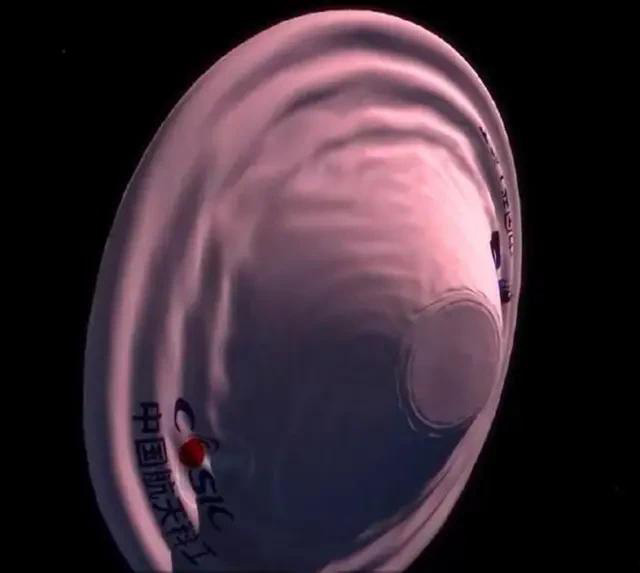

充气式货物返回舱挂载于新飞船底部，属于下一代天地往返技术，整个人类目前都没有攻克这一技术。
首飞圆满成功的长征五号B遥一火箭就是典型案例，此次发射实际上是一箭双星任务，载荷分别是新一代载人飞船试验船与充气式货物返回舱，后者已于本月6日再入地球大气层，但是再入过程中出现异常。
下一代天地往返技术
充气式货物返回舱本身就是实验任务，属于下一代天地往返技术，整个人类目前都没有攻克这一技术，具有极强的技术开拓属性。
充气式返回舱不同于传统返回舱，防热护盾是可以充气展开的气囊，一旦突破之后载人飞船返回舱就可以造得更大， 搭载更多人员与货物，空间站下行货物运输也将更加便利，同时也能用于火星登陆。